The
QZ Algorithm for the Calculation of the Eigenvalues of a Real MatrixD. J. Evans and W. S. Yousif
Parallel Algorithms and Applications, Vol. 4, pp. 183-192, 1994
Abstract
In this paper we present a new algorithm for calculating the eigenvalues of a real matrix. The algorithm is based on the orthogonal decomposition of a square dense matrix by the QZ method proposed in the paper “The QZ orthogonal decomposition method” . A comparison with the QR algorithm confirm the new algorithm to be computationally superior.
A new orthogonal factorization for a square dense matrix was proposed . It decomposes a matrix A into factors of the form
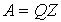
where Q is an orthogonal matrix and Z has the following matrix representation
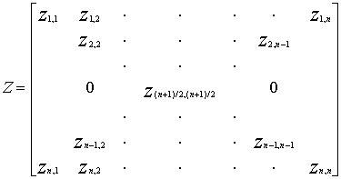
The new factorization is analogous to the Givens QR algorithm .
The QR algorithm starts with
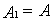
and generate a sequence of matrices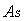
by the following relations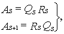
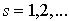
where
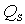
is unitary matrix and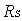
is upper triangular matrix with positive entries on the main diagonal. Such decomposition always exists and can be found using plane rotation matrices. It can be easily verified that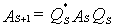
Thus the sequence of matrices
The transformation matrices used for the decomposition of the
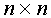
matrix A=QZ was based on the following orthogonal matrices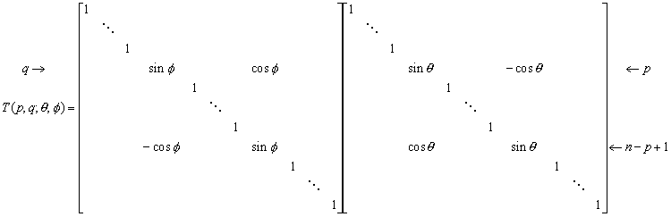
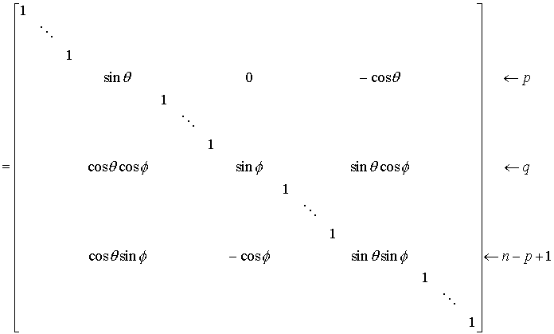
All the matrices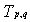
are orthogonal, their product is also an orthogonal matrix Q. By implementing the QZ method, the entries on the first and the last columns of the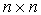
matrix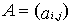
are eliminated simultaneously by forming the matrices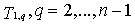
. After this step we have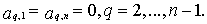
The
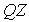
algorithm can be define as the following general equations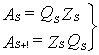
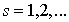
.The repetition of the transformation yields a sequence of matrices
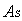
similar to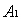
and possessing identical eigenvalues. The sequence converges to a matrix of the form Z .Hence, the eigenvalues of this Z-type matrix can be calculated in parallel as they are the eigenvalues of the